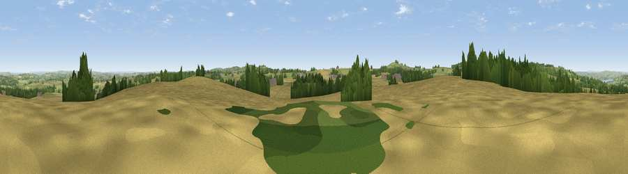

Viewpoint near Green Ore
#14690 in England · top 27% of its area beats it · near Green OreWhere it is
The exact computed spot (ST 58825 51075). Click the marker for map links.
The view, rendered

A 360° render of this exact spot computed from the terrain model, tree cover and land cover — summer colours, afternoon light, calibrated against photographs of famous viewpoints. Real trees, hedges and buildings will differ in detail.
The panorama
Grey silhouette: terrain skyline in each direction (720 bearings, Earth curvature and refraction included). Dashed green: skyline with trees (+15 m) and buildings (+8 m) as obstacles. Blue strip: how far the ground is visible on each bearing.
Where the view opens
Wedge length = distance to the farthest visible ground on that bearing (vegetation-aware). Rings at 10, 25 and 50 km.
What fills the view
47% cropland · 39% grassland · 13% woodland · 1% built-up
Angular shares of the visible panorama (visual magnitude), not map area. Landscape diversity 0.46 (0–1 Shannon).
Key numbers
More beautiful places nearby
The staircase of upgrades: each row has a higher view potential than everything closer. Driving times are estimates from straight-line distance, calibrated against real road routing — check an actual route before setting out.
| Place | Direction | Drive | Score |
|---|---|---|---|
| Viewpoint near West Horrington | SW · 3 km | ~8 min | 73.2 |
| Viewpoint near Wookey Hole | WSW · 5 km | ~11 min | 73.5 |
| Viewpoint near Rodney Stoke | W · 10 km | ~19 min | 75.6 |
| Beacon Batch | WNW · 12 km | ~23 min | 79.4 |
| Bleadon Hill [Loxton Hill] | WNW · 23 km | ~38 min | 79.6 |
| Cothelstone Hill | WSW · 44 km | ~64 min | 82.1 |
| Viewpoint near West Bagborough | WSW · 44 km | ~64 min | 84.3 |
| Wills Neck | WSW · 45 km | ~65 min | 85.7 |
51.25734, -2.59143 · source: screening · position refined by local search. Computed location — check access rights before visiting.